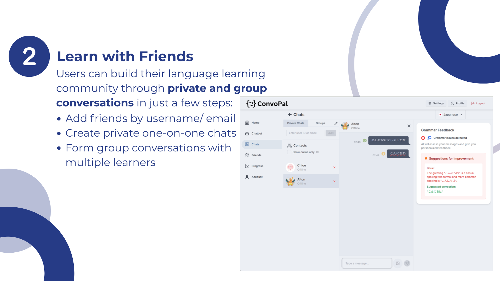
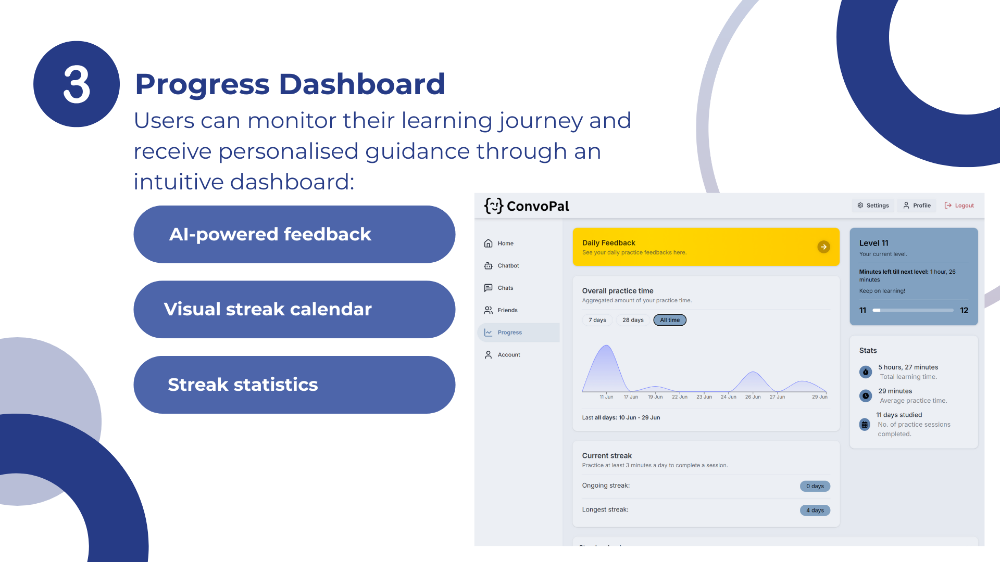
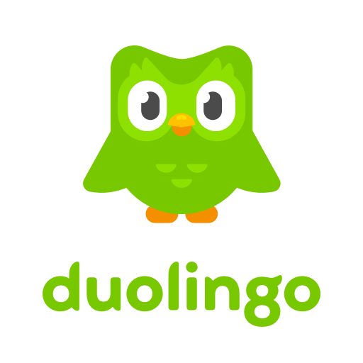

Language learning can be intimidating and isolating, especially for beginners who lack confidence to practice speaking with others.
Many learners struggle with pronunciation, grammar feedback, and finding conversation partners who match their skill level and learning pace.
ConvoPal provides an AI-powered conversation platform designed for beginner language learners. With real-time grammar feedback & guidance, ConvoPal connects users with AI conversation partners and fellow learners.
ConvoPal makes language learning engaging, accessible, and less intimidating for beginners taking their first steps into a new language.


Comprehensive project documentation including technical specifications, features, and setup instructions.
View DocumentationHere you can take a look at a complete walkthrough of Convopal's features and user interactions.
Watch DemoView our project poster showcasing ConvoPal's features and development process.
View PosterWant to try out our project? Access the complete source code and project files for ConvoPal here!
View Code
Friends' Profile: Key user details with consistent iconography and color coding
I drew inspiration from popular messaging platforms that users already love and understand. This approach ensures familiarity while allowing for innovation.

Key Inspirations:
I developed a cohesive color palette that balances professionalism with approachability, ensuring accessibility and visual hierarchy.
Color Strategy:
Establishing a clear typographic hierarchy ensures readability and creates a cohesive user experience across all interfaces.
Mineshaft - Sidebar, Messages, Buttons
Inter - Utility Settings
Typography Strategy: